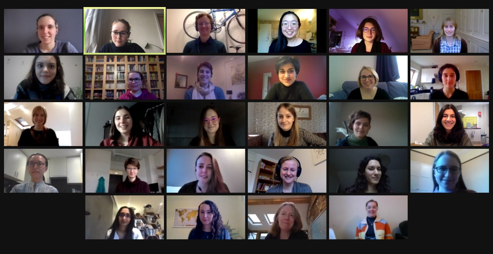
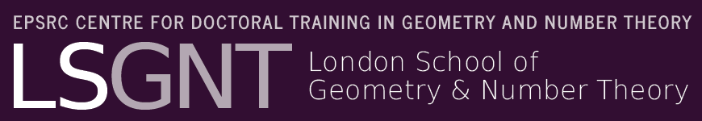
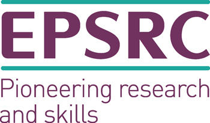
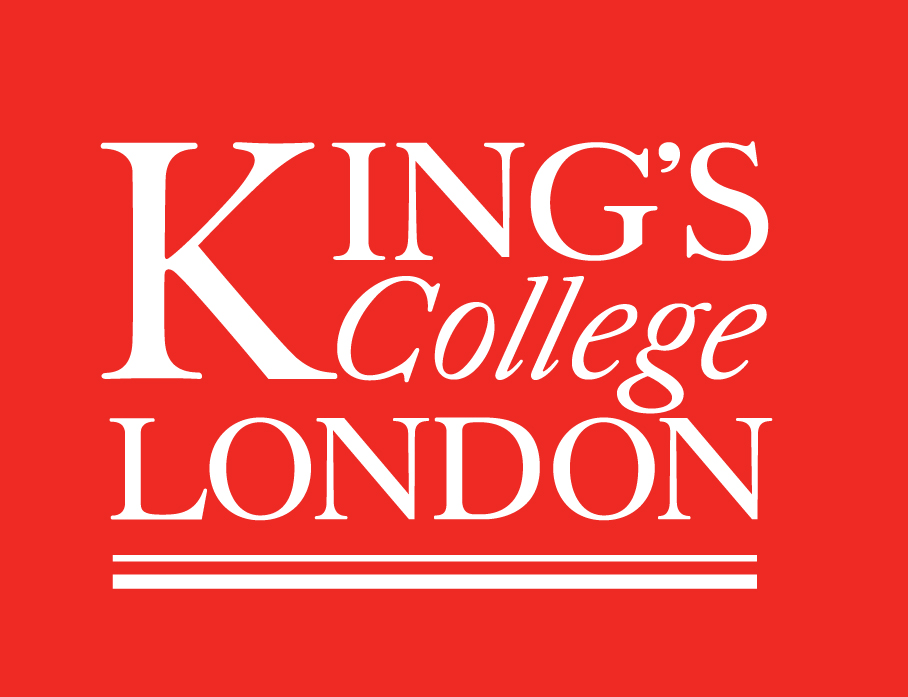

Winter Retreat: 7th-8th January, 2021
Description
WINGs 2021 is the first installment of a 2-day annual retreat for early career mathematicians who identify as female in number theory and geometry, at stages from PhD student upwards. Events included social activities and short talks for participants to encourage interaction and learn about each other’s research and interests. We aim to counteract the isolation which can be experienced by female mathematicians during their career by fostering a sense of community from the start.
This year, our event was virtual, taking place on zoom. The dates of the retreat were the 7th-8th of January, 2021. If you're interested in what events were in store, take a look at the schedule.
Due to the nature of the event, we capped participation at 40 to more closely resemble an actual retreat and to allow for participants to get to know each other in a small group.
The organizers would like to thank all the speakers and participants for helping to make the event a success!

We would like to thank the EPSRC Centre for Doctoral Training in Geometry and Number Theory, University College London, King's College London, and Imperial College London for their funding and support.


